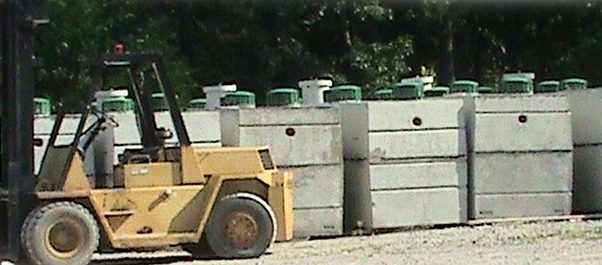

A working system.
From the ground down.
Sales. Installation. Service. Pumping.

We manufacture our own precast concrete septic tanks at our shop.
Fouss Septic Systems offers a full range of services for septic tanks including: new system installation, motor repair, line repair, leach field replacement or addition, tank repair and inspections. We carry new and used Jet and Oldham brand motors. We also repair Jet motors and offer a free estimate on Jet motors brought in to us. We offer a Service Contract for maintenance of your septic tank which is priced based on location. We are approved to repair and install systems in Washington, Athens, Noble, Guernsey, Morgan and Monroe Counties in Ohio. We offer motor repairs in West Virginia also. We are licensed to perform the required yearly inspections for Noble and Guernsey counties in Ohio.
- 01New system installation
- 02Motor repair
- 03Line repair
- 04Leach field replacement or addition
- 05Tank repair
- 06Inspections
The modern septic tank is a water-tight box usually made of reinforced precast concrete, through which no natural bacteria is able to enter. This structure is where organic solids decompose by a natural enzymatic bacterial process.
The purpose of your tank is to treat household wastes including body wastes, laundry water, bath water and discarded food. Septic systems are designed to work indefinitely if they are properly installed and maintained. It is critical to have your septic tank pumped out regularly and to maintain proper levels of enzyme and bacterial action.
It is vital that the motor be in good working order on an aerator system for it to function properly. If the motor is not operating, you will experience diminished system life, increased odors, and groundwater pollution from your septic. A plugged airflow or materials building up on the shaft can cost you hundreds or thousands of dollars if ignored. It is vital that you ensure your motor is maintained in good working order for the life of your system.
Plan your next pump-out →